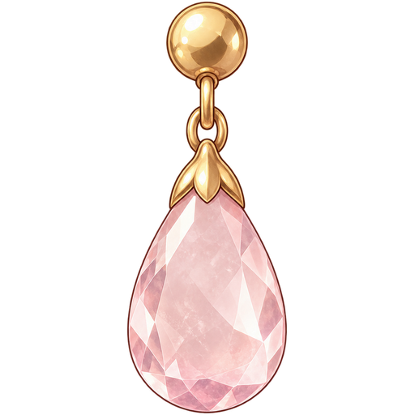
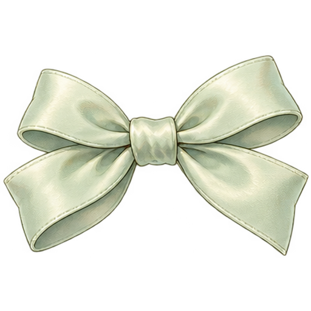
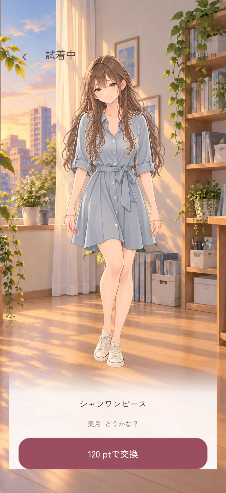
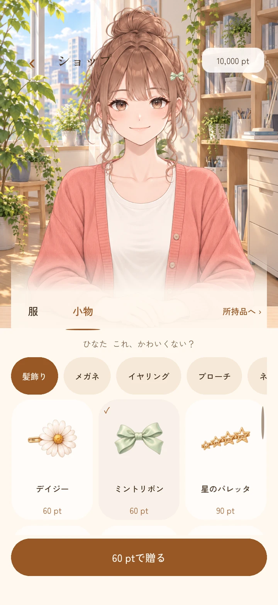
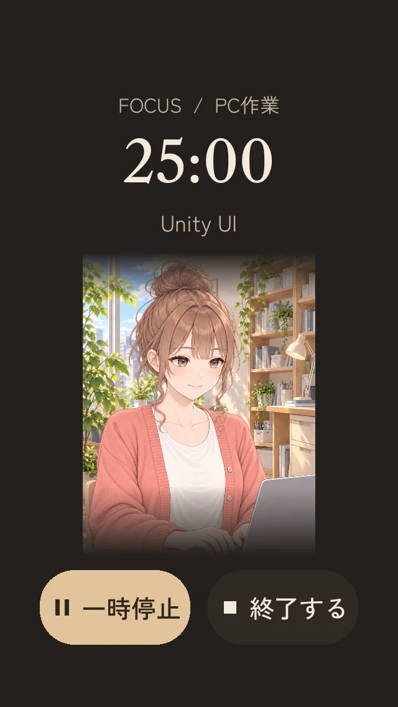
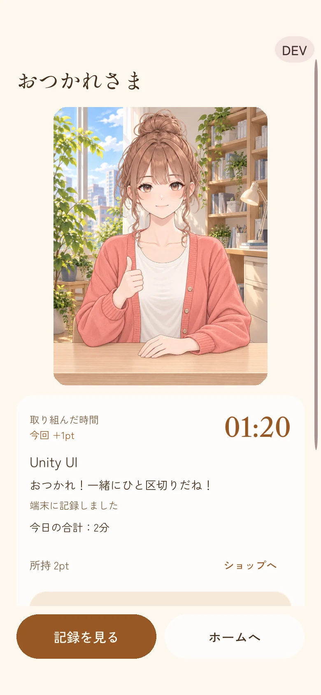
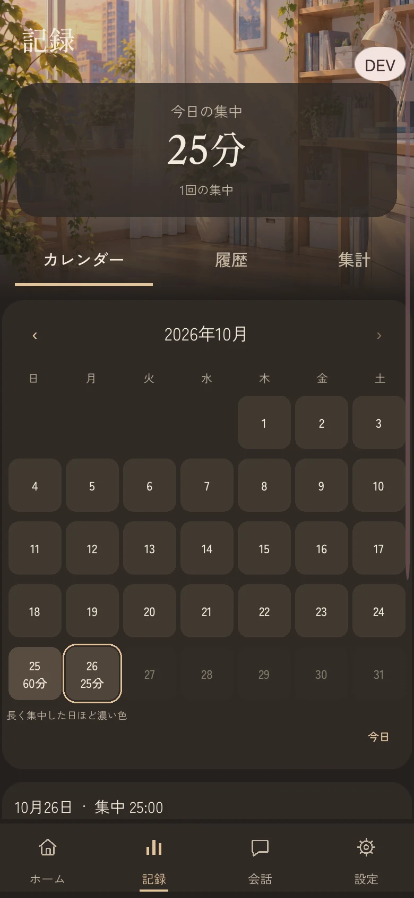

一緒に、集中する。
タイマーでも、時間を決めなくても。
勉強 / 仕事 / 読書YOUR WORDS. YOUR EFFORT. REMEMBERED.
好きなことも、今日の頑張りも。
覚えているから、また会いたくなる。
iPhone向けに開発中 · 公開時期未定
昨日も、頑張ってたよね。
ちゃんと、覚えてるよ。
TODAY — 最初のひと区切り
資格の問題集、25分進めたよ。休憩にはほうじ茶が好き。
25分、おつかれさま。好きなほうじ茶で、ひと息つこう。
資格の勉強中 / ほうじ茶が好き
開発中の会話例です。返答は会話や設定により変わります。
ひとりの頑張りに、小さなつながり。
タイマーでも、時間を決めなくても。
勉強 / 仕事 / 読書頑張ったことも、何気ない雑談も。
AI会話を実機で検証中昨日の会話が、今日につながる。
記憶の確認・訂正・削除
穏やかな日も、元気がほしい日も。
GENTLE & THOUGHTFUL
穏やかに、あなたのペースで。
小さな頑張りにも気づいてくれる、穏やかで聞き上手な相棒。静かに寄り添ってほしい日に。
今日も、あなたのペースで。
LP用のセリフイメージ開発版では5人から選択できます。
公開時の提供内容・料金は準備中です。
A LITTLE MORE YOU.
集中で貯まる無料ポイントを、
お気に入りのコーデに。

✧✧a little change, a little joy.アプリ内のアクセサリー素材を使用しています。
先行体験について

画面は開発中・検証用データを含みます。衣装や交換条件は変更になる場合があります。
アプリの開発画面を、少しだけ。

タイマーでもカウントアップでも。
今日のペースに合わせて。

集中で貯まる無料ポイントで、
衣装やアクセサリーを楽しめます。

カレンダーと集計で振り返る。
進めた時間は、ちゃんと残る。
開発中の画面です。検証用データを含み、表示・仕様は変更になる場合があります。
A FEW THINGS TO KNOW
現在、iPhone実機で開発・検証を進めています。一般公開の時期と先行体験の募集開始日は未定です。ページ下部で先行案内に登録すると、募集開始や公開のお知らせをメールでお送りします。
集中したことや日常の話題などを、相棒の個性に合わせて話す体験を開発中です。AI接続は実機で確認を進めています。通信・利用枠に応じて簡易応答となる場合もあり、公開時の条件は準備中です。
記憶は設定で確認・訂正・削除でき、保存をオフにすることもできます。AIへ送る文脈への反映も検証しています。送信する内容の案内と利用者の同意を大切にしています。
公開時の料金とAI会話の利用枠は検討中です。集中で獲得するポイントと、衣装・アクセサリーの交換を開発しています。確定した料金や提供条件は、公開前にお知らせします。
現在の開発版では、美月・ひなた・凛・悠真・空の5人を選べます。それぞれの会話、表情、作業姿勢、着替えなどを調整しています。公開時の提供内容は準備中です。
OUR STORY IS JUST BEGINNING.
会話も、集中も、着せ替えも。
あなたの毎日に、小さな楽しみを。
BE THE FIRST TO MEET YOUR MATE.
募集開始や公開のご案内を、登録したメールアドレスへお送りします。
相棒と会える日を、楽しみにお待ちください。
うまく登録できない場合は Gmailでお問い合わせ ↗一般公開の時期は未定です。登録は参加枠を確約するものではありません。